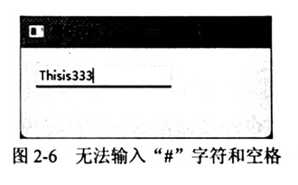
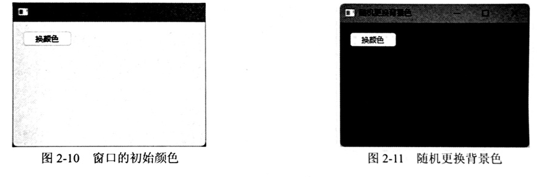
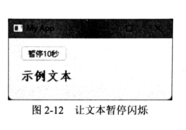
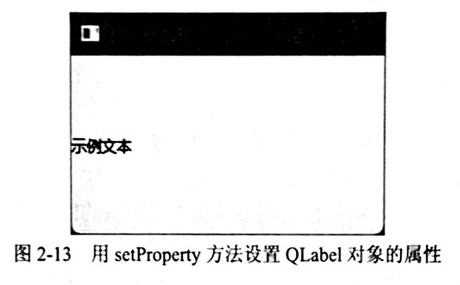

第 2 章
Qt 基础对象
本章共 10 个小节 · PySide6 Basic Tutorial
本章要点：
- 了解 QObject 类。
- 事件的处理与过滤。
- 信号与槽。
- QByteArray 与 QBitArray。
- QBuffer。
- QSysInfo。
- 动态属性。
- 生成随机数。
2.1
QObject 类与 Qt 对象模型
QObject 类是所有 Qt 对象的基类。所有从 QObject 派生的对象都可以组成对象树。例如，有 A、B、C、D 4 个对象，B 可以作为 A 的子级，C 和 D 可以作为 B 的子级，于是就形成了如图 2-1 所示的对象树。
QObject 对象之间使用信号（signal）和槽（slot）进行通信。当某对象（发送者）的内部状态发生改变或发生特定事件时，它会发出信号。接收者会马上做出响应。信号与槽之间可以是一对一的关系，也可以是多对一或多对多的关系。即一个信号可以连接多个槽，一个槽可以被多个信号连接。
QObject 对象也支持事件的处理和筛选。派生类可以重写 event 方法来处理接收到的事件。若返回 True，表示当前对象已处理完毕，并且事件不会传递给基类。一般来说，在 event 方法返回前，应调用基类的 event 方法，把未处理的事件传递给基类去处理。
2.2
建立对象的层级关系
前文已述，Qt 对象可通过建立父子关系来组成对象树。两个对象之间建立父子关系有两种方法。
- 调用类构造函数时，将要作为父级的对象传递给 parent 参数。
- 调用当前对象的 setParent 方法，使当前对象成为另一个对象的子级。
下面来看一个简单的示例。AObject、BObject、CObject 都从 QObject 类派生。
# 导入 QObject 类
from PySide6.QtCore import QObject
# 定义三个类，均派生自 QObject
class AObject(QObject):
# 构造函数
def __init__(self, parent=None) -> None:
# 调用基类的构造函数
super().__init__(parent)
class BObject(QObject):
# 构造函数
def __init__(self, parent=None) -> None:
# 调用基类的构造函数
super().__init__(parent)
class CObject(QObject):
# 构造函数
def __init__(self, parent=None) -> None:
# 调用基类的构造函数
super().__init__(parent)
从 QObject 派生的类，其构造函数应包含一个 parent 参数，用于引用其他对象。parent 参数所引用的对象将作为当前对象的父级。
接下来依次实例化上述三个类，注意 AObject 实例为父级对象，其余两个都是它的子级对象。
# 创建 AObject 实例，它没有父级对象，parent 参数可忽略
obj1 = AObject()
# 创建 BObject 实例，它的父级对象是 obj1
obj2 = BObject(obj1)
# 创建 CObject 实例，它的父级对象也是 obj1
obj3 = CObject(obj1)
也可以用 setParent 方法来建立层级关系。
obj1 = AObject()
obj2 = BObject()
obj3 = CObject()
obj2.setParent(obj1)
obj3.setParent(obj1)
若要获取某对象中所包含的子级对象，可以调用 findChildren 方法。例如，在本示例中，调用 obj1 的 findChildren 方法可以返回 obj2 和 obj3。该方法至少需要一个参数，提供待查找对象的类型。在本示例中，需要同时找出 obj2 和 obj3，因此传递给方法的类型应为 QObject 类，因为 AObject 和 BObject 的共同基类是 QObject。
此时，chdobjs 变量中应该包含 obj2 和 obj3，下面代码将输出它们的类名称（访问 __class__ 成员）。
chdobjs = obj1.findChildren(QObject)
for obj in chdobjs:
print(obj.__class__)
执行后会输出以下内容：
<class '__main__.BObject'>
<class '__main__.CObject'>
2.3
事件与 event 方法
当 Qt 对象接收到某个事件后，会调用 event 方法。派生类可以重写该方法，以实现自定义的事件响应行为。
event 方法包含一个参数，类型为 QEvent。此参数包含与事件有关的信息，其中最为核心的是 type 属性，它返回当前事件的类型（由枚举类型 QEvent.Type 定义）。QEvent 只是基类，程序在实际运行时会根据事件的类型，向 event 方法传递不同的参数值。
例如，若当前发生的事件类型为 Show（当窗口或窗口上的可视化组件呈现之后发生），那传递给 event 方法的参数值就是 QShowEvent 类。再如，当事件类型 MouseButtonPress 时，表示用户按下了鼠标上的某个键，event 方法的参数将接收到 QMouseEvent 类型的对象。该对象将包含与此鼠标事件相关的附加信息——当前鼠标指针所处的位置坐标、哪个键被按下。
下面示例将重写 event 方法，捕捉键盘按下事件（事件类型为 KeyPress），当用户按下的是方向键（上、下、左、右）时，调用 print 函数向控制台输出文本信息。
定义 MyUI 类，它派生自 QWindow，而 QWindow 派生自 QObject 类。因此，MyUI 类也是 QObject 的子类，可以重写 event 方法。
from PySide6.QtCore import *
from PySide6.QtGui import *
class MyUI(QWindow):
# 构造函数
def __init__(self, parent=None):
super().__init__(parent)
# 设置窗口标题
self.setTitle("示例程序")
# 设置窗口大小
self.resize(280, 245)
# 处理事件
def event(self, e: QEvent) -> bool:
# 判断是否为键盘按下事件
if e.type() == QEvent.KeyPress:
keyevent: QKeyEvent = e
if keyevent.key() == Qt.Key_Left:
print("你按下了【向左】键")
if keyevent.key() == Qt.Key_Right:
print("你按下了【向右】键")
if keyevent.key() == Qt.Key_Up:
print("你按下了【向上】键")
if keyevent.key() == Qt.Key_Down:
print("你按下了【向下】键")
# 已处理过，返回 True
return True
# 其他事件交由基类去处理
return super().event(e)
在 event 方法中，先判断当前接收到的事件类型是否 KeyPress。若是则表明参数 e 的类型是 QKeyEvent。为了便于访问，上述代码定义了新的变量 keyevent，并批注其类型为 QKeyEvent，后面的代码将使用此变量。
key 属性表示被按下的键（键码），由枚举类型 Qt.Key 定义。Key_Up 表示向上键，Key_Down 表示向下键。同理，Key_Left、Key_Right 对应的是向左键和向右键。
实例化 MyUI 类，并显示窗口。
if __name__ == "__main__":
app = QGuiApplication()
obj = MyUI()
# 显示窗口
obj.show()
# 开始消息循环
app.exec()
带有用户界面的应用程序，需要先创建一个 QGuiApplication 实例，用于处理当前应用程序的消息循环。创建 MyUI 实例后，调用 show 方法即可显示窗口（此方法继承自 QWindow 类）。最后调用 QGuiApplication 实例的 exec 方法，消息循环正式运行。exec 方法调用后会一直处于等待状态，直到应用程序即将退出时才会返回。
待窗口显示后，随意按下键盘上的方向键，控制台窗口会打印以下信息：
你按下了【向左】键
你按下了【向右】键
你按下了【向上】键
你按下了【向下】键
你按下了【向右】键
你按下了【向左】键
2.3.1 接受与忽略事件
在重写 event 方法时，如果调用 QEvent 对象的 accept 方法，表示当前 Qt 对象已接受该事件，这会使事件不会传播给父级对象。若调用了 QEvent 对象的 ignore 方法，表示当前 Qt 对象将忽略该事件，事件会传播给父级对象。
注意，此处 accept 和 ignore 方法只是控制事件是否向 Qt 对象树的父级传播，而不是向基类传播。
接下来将完成一个示例，该示例定义两个从 QWidget 派生的类。其中，MyWindow 类表示应用程序窗口，MyElement 表示位于窗口上的可视化组件。在 MyElement 类中重写 event 方法，将类型为 MouseButtonPress 的事件（鼠标按下时发生）标记为“忽略”。MouseButtonPress 事件将向上传播到 MyWindow 对象的 event 方法中。
首先要导入需要的类型。
from PySide6.QtCore import *
from PySide6.QtGui import *
from PySide6.QtWidgets import QWidget, QApplication, QMessageBox
下面代码实现 MyElement 类，派生自 QWidget 类。
class MyElement(QWidget):
# 构造函数
def __init__(self, parent: QWidget = None):
super().__init__(parent)
# 设置大小
self.resize(180, 70)
# 重写 event 方法
def event(self, e: QEvent) -> bool:
if e.type() == QEvent.MouseButtonPress:
# 忽略此事件
e.ignore()
return True
return super().event(e)
如果上述代码调用的是 e.accept() 方法，那么 MouseButtonPress 类型的事件就不会传给 MyWindow 对象了。但本示例调用的是 e.ignore() 方法，所以 MyWindow 对象会接收到 MouseButtonPress 类型的事件。
接下来实现 MyWindow 类，它的基类也是 QWidget 类。
class MyWindow(QWidget):
# 构造函数
def __init__(self, parent=None) -> None:
super().__init__(parent, Qt.Window)
# 窗口标题
self.setWindowTitle("示例程序")
# 窗口大小
self.resize(260, 200)
# 重写 event 方法
def event(self, e: QEvent) -> bool:
# 如果是鼠标按下事件
if e.type() == QEvent.MouseButtonPress:
# 弹出消息框
QMessageBox.information(self, "提示", "父窗口接收到鼠标事件", QMessageBox.Ok)
# 已处理，返回 True
return True
return super().event(e)
MyWindow 类也重写了 event 方法，如果接收到的事件类型是 MouseButtonPress 就调用 QMessageBox.information 静态方法弹出消息对话框。
最后，实例化 MyWindow 类，并且作为 MyElement 对象的父级对象。调用 show 方法将显示窗口。
if __name__ == "__main__":
app = QApplication()
# 实例化 MyWindow 类
win = MyWindow()
# 实例化 MyElement 类，它的父级对象是 win
elm = MyElement(win)
# 调整可视化对象在窗口上的位置
elm.move(36, 30)
# 显示窗口
win.show()
app.exec()
若应用程序中使用了 QWidget 类或其子类，应用程序应使用 QApplication 类管理消息循环。
应用程序运行后，主窗口如图 2-2 所示。窗口上有颜色的区域就是 MyElement 对象。此时单击该区域，会弹出消息“父窗口接收到鼠标事件”，如图 2-3 所示。被单击的是 MyElement 对象，MyWindow 对象却接收到了鼠标事件，这表明事件已成功向上传播。
2.3.2 sendEvent 与 postEvent
QCoreApplication 类提供了两个静态方法，可以在代码中手动发送事件。
- sendEvent 方法：直接将事件发送给目标对象。事件会立即被处理，并等待事件处理完毕此方法才返回。
- postEvent 方法：将事件发送给目标对象后立即返回（不会等待），事件被添加到事件队列中。事件的处理需要排队，可能不会马上处理。
典型的使用场景是模拟键盘按键——每个按键需要发送两个事件，模拟键盘按下时发送 KeyPress 事件，模拟键盘松开（释放）时发送 KeyRelease 事件。
下面示例中，窗口上有 5 个按钮，依次模拟以下按键。
- “全选”按钮：模拟快捷键【Ctrl+A】。
- “删除”按钮：模拟【Delete】按键。
- “退格”按钮：模拟【BackSpace】按键。
- “<-”按钮：模拟向左的箭头键。
- “->”按钮：模拟向右的箭头键。
应用程序窗口为自定义的 MyWindow 类，派生自 QWidget 类。窗口左半部分为 5 个垂直排列的按钮部件（类型为 QPushButton）。窗口右半部分放置的是多行文本输入部件（类型 QTextEdit）。5 个按钮被单击后将模拟上述 5 个键盘按键，按键将作用于输入部件。
class MyWindow(QWidget):
# 构造函数
def __init__(self):
super().__init__(None)
# 初始化可视化元素
self.initUI()
# 窗口标题
self.setWindowTitle("发送键盘事件")
def initUI(self):
self.btnSelAll = QPushButton("全选")
self.btnDelete = QPushButton("删除")
self.btnBackspace = QPushButton("退格")
self.btnMoveLeft = QPushButton("<-")
self.btnMoveRight = QPushButton("->")
self.text = QTextEdit()
self.grid = QGridLayout(self)
self.vbox = QVBoxLayout()
self.vbox.addWidget(self.btnSelAll)
self.vbox.addWidget(self.btnDelete)
self.vbox.addWidget(self.btnBackspace)
self.vbox.addWidget(self.btnMoveLeft)
self.vbox.addWidget(self.btnMoveRight)
self.grid.addLayout(self.vbox, 0, 0)
self.grid.addItem(QSpacerItem(15, 0), 0, 1)
self.grid.addWidget(self.text, 0, 2)
# 连接信号和槽
self.btnSelAll.clicked.connect(self.onSelAll)
self.btnDelete.clicked.connect(self.onDel)
self.btnBackspace.clicked.connect(self.onBackSpace)
self.btnMoveLeft.clicked.connect(self.onMoveLeft)
self.btnMoveRight.clicked.connect(self.onMoveRight)
def onSelAll(self):
# Ctrl + A
key = Qt.Key_A
modf = Qt.ControlModifier
# 发送键盘按下事件
keyEvt = QKeyEvent(QKeyEvent.KeyPress, key, modf)
QApplication.sendEvent(self.text, keyEvt)
# 发送键盘释放事件
keyEvt = QKeyEvent(QKeyEvent.KeyRelease, key, modf)
QApplication.sendEvent(self.text, keyEvt)
def onDel(self):
# Delete
key = Qt.Key_Delete
QApplication.sendEvent(self.text, QKeyEvent(QKeyEvent.KeyPress, key, Qt.NoModifier))
QApplication.sendEvent(self.text, QKeyEvent(QKeyEvent.KeyRelease, key, Qt.NoModifier))
def onBackSpace(self):
# BackSpace
key = Qt.Key_Backspace
modif = Qt.NoModifier
QApplication.sendEvent(self.text, QKeyEvent(QKeyEvent.KeyPress, key, modif))
QApplication.sendEvent(self.text, QKeyEvent(QKeyEvent.KeyRelease, key, modif))
def onMoveLeft(self):
# Left
key = Qt.Key_Left
mod = Qt.NoModifier
QApplication.sendEvent(self.text, QKeyEvent(QKeyEvent.KeyPress, key, mod))
QApplication.sendEvent(self.text, QKeyEvent(QKeyEvent.KeyRelease, key, mod))
def onMoveRight(self):
# Right
key = Qt.Key_Right
mod = Qt.NoModifier
QApplication.sendEvent(self.text, QKeyEvent(QKeyEvent.KeyPress, key, mod))
QApplication.sendEvent(self.text, QKeyEvent(QKeyEvent.KeyRelease, key, mod))
QPushButton 被单击后会发出 clicked 信号，onSelAll、onDel 等方法用于接收信号并做出响应（槽函数）。一条完整的键盘消息应包括键被按下和释放两个动作，因此在调用 sendEvent 方法进行事件模拟时，应依次发送 KeyPress 和 KeyRelease 两个事件。
运行示例程序后，在输入框中随意输入一些字符，然后可以单击窗口左侧的按钮进行测试，如图 2-4 所示。
2.3.3 自定义事件
QEvent.Type 定义了许多内置的事件类型，如 KeyPress、Resize、MouseButtonPress 等。同时，它也为开发人员保留了自定义事件类型的空间。
事件类型本质上是一个整数值，其中 User 的值为 0x3e8（十进制值 1000），MaxUser 的值为 0xffff（十进制值为 65535）。自定义的事件类型的取值必须在 User 与 MaxUser 之间，不能与内置的事件类型重复。
在确定自定义事件类型的值后，需要调用 QEvent 类的静态方法 registerEventType 进行注册。事件注册后，若要触发事件，就可以调用 sendEvent 或 postEvent 方法将事件发送给目标 Qt 对象。
下面示例注册了两个自定义的事件——MyCustomEvent1 和 MyCustomEvent2。窗口上放置了两个按钮（QPushButton 部件），分别用于触发上述自定义事件。具体实现步骤如下。
定义两个变量，设置自定义事件的值。
MyCustomEvent1 = QEvent.Type(QEvent.Type.User + 1)
MyCustomEvent2 = QEvent.Type(QEvent.Type.User + 2)
注意，变量在赋值时要明确使用 QEvent.Type 数据类型。表达式 QEvent.Type.User + 1 和 QEvent.Type.User + 2 返回的值都会被解析为 int，因此要将其转换为 QEvent.Type 类型。
定义 AppWindow 类，派生自 QWidget。在构造函数中调用 initUI 方法，初始化应用窗口的可视化对象。
def __init__(self):
super().__init__(None)
# 初始化用户界面
self.initUI()
下面是 initUI 方法的实现代码。
def initUI(self):
# 布局
layout = QVBoxLayout(self)
# 标签部件
self.label = QLabel()
# 按钮部件
self.btn1 = QPushButton("自定义事件 1")
self.btn2 = QPushButton("自定义事件 2")
# 将以上部件添加到布局中
layout.addWidget(self.label)
layout.addWidget(self.btn1)
layout.addWidget(self.btn2)
# 应用布局
self.setLayout(layout)
# 为按钮的 clicked 信号绑定槽函数
self.btn1.clicked.connect(self.onClicked1)
self.btn2.clicked.connect(self.onClicked2)
# 窗口标题
self.setWindowTitle("示例程序")
# 窗口大小
self.resize(200, 160)
QLabel 部件用于显示文本信息，两个 QPushButton 部件被单击后会发出 clicked 信号，并由 onClicked1、onClicked2 接收。
以下为 onClicked1 和 onClicked2 的实现代码。
def onClicked1(self):
QApplication.postEvent(self, QEvent(MyCustomEvent1))
def onClicked2(self):
QApplication.postEvent(self, QEvent(MyCustomEvent2))
自定义事件发送给当前窗口后，需要重写 event 方法进行接收。已经处理的事件返回 True，其他事件继续交给基类。
def event(self, e: QEvent) -> bool:
if e.type() == MyCustomEvent1:
self.label.setText("自定义事件 1 已触发")
return True
if e.type() == MyCustomEvent2:
self.label.setText("自定义事件 2 已触发")
return True
return super().event(e)
在创建应用程序对象前注册事件类型，然后显示窗口并进入消息循环。
QEvent.registerEventType(MyCustomEvent1)
QEvent.registerEventType(MyCustomEvent2)
app = QApplication()
window = AppWindow()
window.show()
app.exec()
2.3.4 事件过滤器
事件过滤器让一个 QObject 监视另一个对象收到的事件，无需仅为了过滤事件而创建新的部件子类。被监视对象通过 installEventFilter 注册监视者；监视者重写 eventFilter。返回 True 表示拦截事件，返回 False 或调用基类实现则继续传递。
下面的窗口监视文本输入框的按键事件，并拦截空格与“#”字符。
class MyWindow(QWidget):
def __init__(self):
super().__init__(None, Qt.Window)
self.setWindowTitle("事件过滤")
self.resize(200, 80)
self.txtEdit = QLineEdit(self)
self.txtEdit.move(15, 17)
self.txtEdit.installEventFilter(self)
def eventFilter(self, watched: QObject, e: QEvent) -> bool:
if watched == self.txtEdit:
if e.type() in (QEvent.KeyPress, QEvent.KeyRelease):
key_event = QKeyEvent(e)
if key_event.key() in (Qt.Key_Space, Qt.Key_NumberSign):
return True
return super().eventFilter(watched, e)

事件过滤器拦截“#”字符和空格
同一个对象可以注册多个事件过滤器。过滤器的激活顺序与注册顺序相反：最后注册的过滤器最先收到事件。若不再需要监视，可调用 removeEventFilter 解除注册。
button.installEventFilter(filter1)
button.installEventFilter(filter2)
button.installEventFilter(filter3)
# 激活顺序：filter3 → filter2 → filter1
button.removeEventFilter(filter2)
2.4
信号与槽
信号与槽是 Qt 对象之间的通信机制。信号负责发出通知，槽负责接收通知并执行相应逻辑。在类中声明信号时使用 Signal，通过对象访问它时，实际得到的是可连接、断开和发送的信号实例。
| 方法 | 用途 |
|---|
connect(slot) | 把信号连接到槽函数或另一个信号。 |
disconnect(slot) | 解除已经建立的连接。 |
emit(...) | 发出信号，并把参数传递给槽。 |
from PySide6.QtCore import QObject, Signal
class Demo(QObject):
message = Signal(str)
demo = Demo()
demo.message.connect(lambda text: print(f"收到：{text}"))
demo.message.emit("hello")
2.4.1 一个信号连接多个槽
同一个信号可以连接多个槽。信号发出后，各个槽通常按照调用 connect 的先后顺序执行。这个特性适合把界面更新、日志记录等互不依赖的操作拆开处理。
button.clicked.connect(save_data)
button.clicked.connect(update_status)
button.clicked.connect(write_log)
2.4.2 带参数的信号与重载
把参数类型传给 Signal 即可声明带参数信号。槽函数应当能够接收相同数量的参数。一个信号还可以提供多个参数类型版本，连接和发送时通过方括号选择所需的重载。
class Worker(QObject):
progress = Signal(int, str)
valueChanged = Signal((int,), (str,))
worker = Worker()
worker.progress.connect(
lambda value, text: print(value, text)
)
worker.progress.emit(60, "处理中")
worker.valueChanged[int].connect(print)
worker.valueChanged[int].emit(42)
2.4.3 自动连接槽
QMetaObject.connectSlotsByName 可以按照对象名和槽方法名自动完成连接。子对象要先通过 setObjectName 设置名称，槽则按 on_对象名_信号名 命名，并使用 Slot 装饰器标注。
from PySide6.QtCore import QMetaObject, Slot
self.button.setObjectName("myButton")
QMetaObject.connectSlotsByName(self)
@Slot()
def on_myButton_clicked(self):
print("按钮被单击")
2.4.4 自定义信号与信号阻绝器
自定义信号可以传递 QColor 等 Qt 类型。下面的思路是在按钮槽中选择颜色，再通过 setColor 信号把颜色交给另一个槽，从而修改窗口调色板。
class ColorWindow(QWidget):
setColor = Signal(QColor)
def __init__(self):
super().__init__()
self.setColor.connect(self.applyColor)
def applyColor(self, color):
palette = self.palette()
palette.setColor(QPalette.Window, color)
self.setPalette(palette)

发出自定义信号后更换窗口背景颜色
QSignalBlocker 用于临时阻止某个对象发出信号。它支持上下文管理器语法，退出 with 代码块后会自动恢复原来的信号状态。
with QSignalBlocker(self.timer):
loop = QEventLoop(self)
QTimer.singleShot(10_000, loop.quit)
loop.exec()

临时阻止定时器的 timeout 信号
2.5
字节序列——QByteArray
QByteArray 用于保存和处理字节序列。它可以追加数据、替换内容、进行数值与字符串转换，也提供切片、Base64 编解码、拆分和频数统计等操作。在纯 Python 代码中也可以使用 bytes，但许多 Qt API 会直接返回或接收 QByteArray。
from PySide6.QtCore import QByteArray
data = QByteArray()
data.append(b"\x25\x6c\x82")
data.append(b"\x45\xa6\xd7")
print(data.size()) # 6
print(data.toHex()) # b'256c8245a6d7'
2.5.1 替换与数值转换
replace 可以替换字节内容；number 可以把整数或浮点数转换成字节形式的字符串；toInt、toFloat 和 toDouble 则执行反向转换。数值转换方法会同时返回转换结果和是否成功的布尔值。
word = QByteArray("fine")
word.replace(QByteArray("ne"), QByteArray("sh"))
print(word.toStdString()) # fish
hex_text = QByteArray.number(28, 16)
print(hex_text.toStdString()) # 1c
value, ok = QByteArray("1011").toInt(2)
print(value, ok) # 11 True
2.5.2 截取、切片与重复
chop 会直接从末尾移除指定数量的字节，chopped 返回处理后的副本；first 与 last 分别从两端截取；sliced 可从任意偏移量提取数据。repeated 返回重复指定次数的新序列。
data = QByteArray("workstation")
print(data.sliced(2, 4).toStdString()) # rkst
print(data.sliced(7).toStdString()) # tion
copy = QByteArray("一二三").repeated(3)
print(copy.toStdString())
2.5.3 Base64、拆分和统计
调用 toBase64 与 fromBase64 可以完成 Base64 编解码。若结果用于 URL，可指定 Base64UrlEncoding。split 按分隔符拆分数据，count 用于统计子串出现次数。
source = QByteArray("watermelon")
encoded = source.toBase64()
decoded = QByteArray.fromBase64(encoded)
print(encoded.toStdString())
print(decoded.toStdString())
parts = QByteArray("D301%542168%K7").split("%")
print([part.toStdString() for part in parts])
2.6
QBuffer
QBuffer 为 QByteArray 提供类似文件的读写接口。读写前要调用 open 指定模式；使用后调用 close。它既能维护自己的字节数组，也可以操作已有的 QByteArray。
| 打开模式 | 含义 |
|---|
ReadOnly | 只读。 |
WriteOnly | 只写，并清除原数据。 |
Append | 从原数据末尾追加。 |
Text | 以平台对应的文本换行规则读写。 |
from PySide6.QtCore import QByteArray, QBuffer
data = QByteArray("abc")
buffer = QBuffer(data)
buffer.open(QBuffer.Append)
buffer.write(b"xyz")
buffer.close()
print(data.toStdString()) # abcxyz
seek 用于设置当前读写偏移量。下面先从索引 5 开始写入，再从索引 3 开始读取 3 个字节。
data = QByteArray("abcdeopq")
buffer = QBuffer(data)
buffer.open(QBuffer.WriteOnly)
buffer.seek(5)
buffer.write(b"fghi")
buffer.close()
buffer.open(QBuffer.ReadOnly)
buffer.seek(3)
print(buffer.read(3).toStdString()) # def
buffer.close()
2.7
位序列——QBitArray
QBitArray 的每个元素只有 True 或 False 两种状态。构造函数可指定长度和默认值；setBit 设置某一位，clearBit 把某一位清为 False，at 读取某一位。
from PySide6.QtCore import QBitArray
bits = QBitArray(8, True)
bits.setBit(1, False)
bits.clearBit(4)
values = [bits.at(i) for i in range(bits.size())]
print(values)
print(bits.count(False))
i
clearBit(index) 只清除指定位置；clear() 会清空整个数组，使长度变为 0。
2.8
QSysInfo
QSysInfo 提供操作系统、内核和 CPU 架构等只读信息，适合在诊断页面、日志或条件分支中使用。
from PySide6.QtCore import QSysInfo
print("系统：", QSysInfo.productType(), QSysInfo.productVersion())
print("内核：", QSysInfo.kernelType(), QSysInfo.kernelVersion())
print("CPU：", QSysInfo.currentCpuArchitecture())
2.9
Qt 的动态属性
所有 QObject 子类都可以在运行阶段增加动态属性。setProperty 写入属性，property 读取属性，dynamicPropertyNames 返回当前对象上所有动态属性的名称。
from PySide6.QtCore import QObject
obj = QObject()
obj.setProperty("prop1", 500)
obj.setProperty("prop2", "abc")
for name in obj.dynamicPropertyNames():
key = name.toStdString()
print(key, "=", obj.property(key))
setProperty 也能写入 Qt 类型本身已经声明的属性。下面通过统一的属性接口设置标签的标题、大小与文本。
label.setProperty("windowTitle", "Demo App")
label.setProperty("size", QSize(250, 130))
label.setProperty("text", "示例文本")

使用 setProperty 设置 QLabel 对象的属性
2.10
生成随机数
Qt 项目可以使用 QRandomGenerator 生成随机整数或 0～1 之间的浮点数。直接构造的实例使用固定种子，适合可重复测试；一般业务更适合使用全局共享实例。
from PySide6.QtCore import QRandomGenerator
random = QRandomGenerator.global_()
print(random.generate())
print(random.generateDouble())
print(random.bounded(0, 100)) # 0～99
2.10.1 种子与内置实例
伪随机序列由种子决定，相同种子会产生相同序列。global_() 返回共享实例，适合大多数场景；securelySeeded() 每次创建新的、由系统安全初始化的实例；system() 则直接使用操作系统提供的随机源。涉及密码、令牌或验证码时，应采用专门的密码学安全方案，不应只依赖普通伪随机序列。
shared = QRandomGenerator.global_()
secure = QRandomGenerator.securelySeeded()
system_random = QRandomGenerator.system()